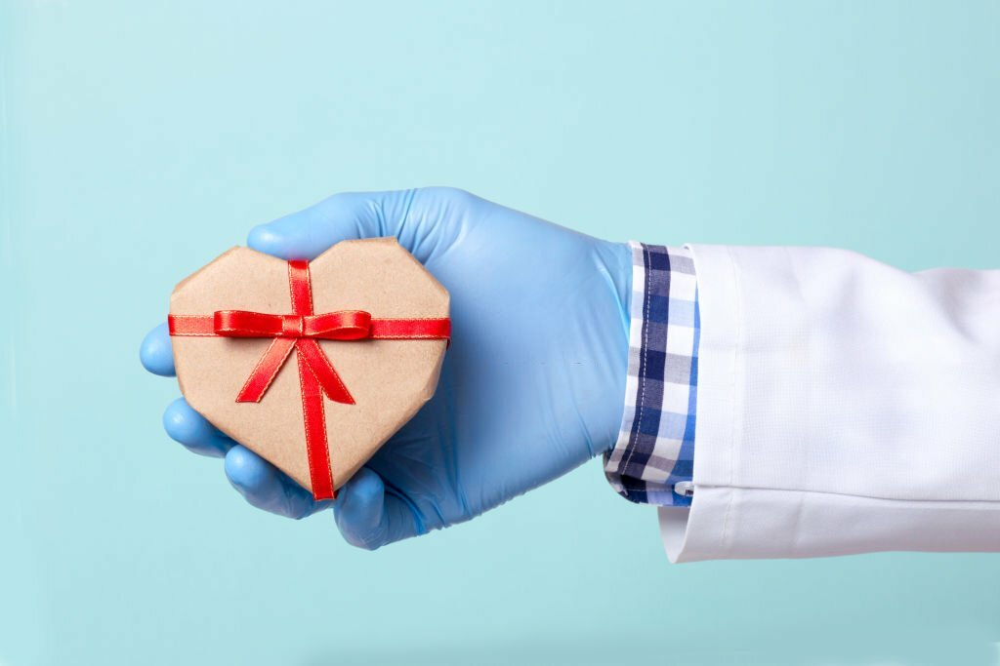
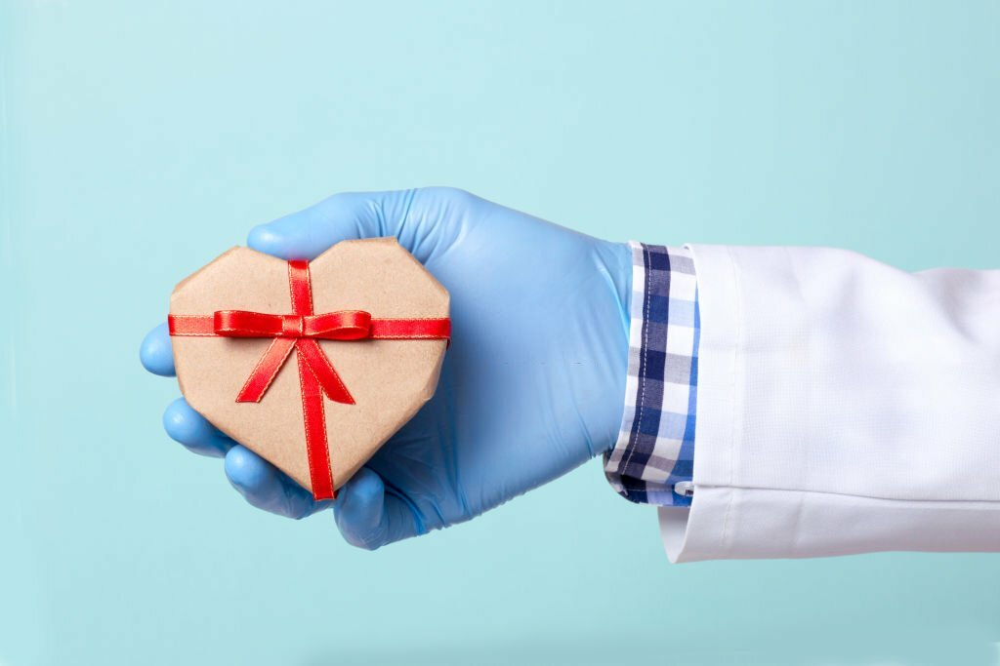

Was sind fürsorgliche Geschenke für Krankenschwestern?
Die Arbeit von Krankenschwestern ist von unermüdlichem Einsatz und Hingabe geprägt. Ihre Pflege geht über die rein medizinische Versorgung hinaus, und es ist wichtig, ihre Anstrengungen zu würdigen. Aber welche Geschenke drücken Fürsorge und Anerkennung am besten aus?
Einleitung
Krankenschwestern spielen eine entscheidende Rolle im Gesundheitswesen, und ihre Hingabe verdient besondere Anerkennung. Fürsorgliche Geschenke sind eine Möglichkeit, Dankbarkeit und Wertschätzung auszudrücken.
Berufsalltag von Krankenschwestern
Der Alltag im Krankenhaus ist anspruchsvoll und oft stressig. Krankenschwestern stehen vor vielfältigen Herausforderungen, und ihre Arbeit erfordert nicht nur medizinisches Fachwissen, sondern auch emotionale Belastbarkeit.
Praktische Geschenke für den Arbeitsplatz
Geschenke, die den Arbeitsalltag erleichtern, sind besonders geschätzt. Von ergonomischem Schuhwerk bis hin zu organisatorischen Hilfsmitteln gibt es viele praktische Geschenkideen.
Persönliche Note: Individualisierte Geschenke
Die Individualisierung von Geschenken verleiht diesen eine persönliche Note. Namensgravuren auf Stethoskopen oder personalisierte Schwesternuhren sind Beispiele für Geschenke mit einer besonderen persönlichen Bindung.
Entspannung und Wellness als Geschenk
In einem so anspruchsvollen Berufsfeld wie der Krankenpflege ist Entspannung entscheidend. Wellness-Geschenke wie Massagegutscheine oder Spa-Behandlungen können helfen, Stress abzubauen.
Geschenke, die Wertschätzung ausdrücken
Es gibt Geschenke, die direkt die Wertschätzung für die hingebungsvolle Arbeit der Krankenschwestern ausdrücken. Dankeskarten, Blumenarrangements oder symbolische Geschenke können diese Anerkennung vermitteln.
DIY-Geschenkideen für eine persönliche Note
Do-it-yourself-Geschenke haben eine besondere Authentizität. Selbst gemachte Dankeskarten, gestrickte Accessoires oder selbstgebackene Leckereien zeigen eine persönliche Bindung.
Feiern von Erfolgen und Meilensteinen
Erfolge und Meilensteine im Beruf einer Krankenschwester verdienen besondere Aufmerksamkeit. Geschenke können dazu beitragen, diese Errungenschaften zu würdigen und den Stolz zu teilen.
Budgetfreundliche Geschenkoptionen
Fürsorgliche Geschenke müssen nicht teuer sein. Kostengünstige Optionen wie handgeschriebene Briefe, selbstgemachte Leckereien oder kleine Aufmerksamkeiten können genauso bedeutsam sein.
Geschenke für den Feierabend und Freizeit
Beruf und Freizeit sollten im Gleichgewicht stehen. Geschenke, die den Feierabend verschönern, wie gute Bücher, Filme oder Freizeitaktivitäten, können dabei helfen.
Anerkennung durch Worte: Dankeskarten und Briefe
Neben materiellen Geschenken können auch geschriebene Worte große Wirkung haben. Persönliche Dankeskarten oder Briefe können die emotionale Verbundenheit ausdrücken.
Geschenke von der Gemeinschaft: Zusammenhalt stärken
Die Unterstützung der Gemeinschaft ist ein wichtiger Aspekt. Gemeinschaftliche Geschenke, die von vielen kommen, zeigen, dass die Arbeit der Krankenschwestern von allen geschätzt wird.
Inspiration durch pflegende Geschichten
Geschichten von inspirierenden Krankenschwestern können als Quelle der Inspiration dienen. Solche Erzählungen können Ideen für einzigartige und bedeutungsvolle Geschenke liefern.
Vielfalt in den Geschenkoptionen
Die Vielfalt in den möglichen Geschenken spiegelt die unterschiedlichen Persönlichkeiten und Vorlieben der Krankenschwestern wider. Angepasste Geschenke zeigen, dass man ihre Individualität respektiert.
Fazit
Fürsorgliche Geschenke für Krankenschwestern sind eine Möglichkeit, ihre wichtige Arbeit zu würdigen. Es geht darum, nicht nur den Beruf, sondern auch die Person dahinter zu schätzen. Kleine Gesten der Anerkennung können große Wirkung haben.
Häufig gestellte Fragen (FAQs)
- Sind personalisierte Geschenke für Krankenschwestern immer angebracht?
- Personalisierte Geschenke zeigen eine besondere Überlegung, können jedoch nicht immer für jede Situation geeignet sein. Es ist wichtig, die Persönlichkeit der Krankenschwester zu berücksichtigen.
- Welche Wellness-Geschenke sind besonders beliebt bei Krankenschwestern?
- Massagen, Spa-Behandlungen und Wellness-Gutscheine sind beliebte Geschenke, da sie Entspannung und Erholung bieten.
- Gibt es spezielle Geschenke für den Nachtdienst?
- Ja, Geschenke, die den Schlaf fördern, wie bequeme Schlafmasken oder beruhigende Schlafmusik, können für Krankenschwestern im Nachtdienst besonders hilfreich sein.
- Wie kann die Gemeinschaft dazu beitragen, Geschenke zu organisieren?
- Gemeinschaftliche Geschenke können durch Spendenaktionen, gemeinsame Organisation von Events oder Gruppenkarten realisiert werden. Jeder Beitrag zählt.
- Kann man Dankeskarten auch digital verschicken?
- Ja, digitale Dankeskarten sind eine moderne und umweltfreundliche Möglichkeit, Anerkennung auszudrücken. Sie können per E-Mail oder über soziale Medien versendet werden.
 
